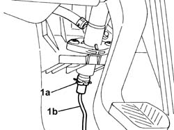
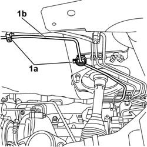
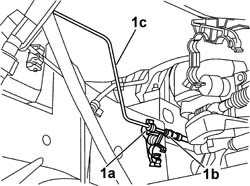

1820B45 RIGID DELIVERY PIPE FROM MASTER CYLINDER (PUMP) - R R FOR RHD VER SIONS
- Path
- Procedures > 18 CLUTCH UNIT > 1820 CLUTCH RELEASE CONTROLS > 1820B HYDRAULIC CLUTCH SYSTEM > 1820B45 RIGID DELIVERY PIPE FROM MASTER CYLINDER (PUMP) - R R FOR RHD VER SIONS
- Kind
- repair procedure (removal / refitting; the operation number is the code)
- Applies to
- all engines; all production periods
- Interactive page
- https://sloeber94.github.io/elrnDB-fDct/en/#/244001015
Applies to: all engines; all production periods
 Removing
Removing
 Refitting
Refitting- Disconnect the negative battery lead.
 | Description | Connector |
|---|---|---|
. | Battery | A001B |
Op. 1016A10 SOUND-PROOFING COVER - R + R
- Remove the protective cap from the bleed valve on one of the front brake calipers.
- Connect the recovery device (pipe and reservoir) to the brake caliper bleed valve.
- Operate the brake pedal until the brake/clutch reservoir is drained.
- Proceed from the inside of the passenger compartment.
1. Working from inside the vehicle, act on the locking spring (1a) and disconnect the rigid pipe (1b) from the master cylinder (pump).

Applies to: all engines; all production periods
Op. 1076B50 EXHAUST PIPE ATTACHMENT TO ENGINE - R + R
Op. 1040A40 PLUG FOR FUEL FILLER PIPE - R + R
Op. 1040A30 OIL SEAL COVER, FLY WHEEL SIDE - R + R AND REPLACE SEALS
1. Open the retaining clips (1a) and release the rigid pipe (1b) on the bodyshell.

Applies to: all engines; all production periods
1. Open the retaining clip (1a), undo the connector (1b), then remove the rigid pipe (1c) from the vehicle.

Applies to: all engines; all production periods
Refitting
Removing- Place the rigid pipe in the vehicle and tighten the connector to the flexible pipe.
 | Value - daNm | Fastening | Component | Ø |
|---|---|---|---|---|
. | 1,6 | Connector | RIGID PIPE FROM CLUTCH MASTER CYLINDER | M10 |
- Close the rigid pipe retaining clips on the bodyshell.
Op. 1040A30 OIL SEAL COVER, FLY WHEEL SIDE - R + R AND REPLACE SEALS
Op. 1040A40 PLUG FOR FUEL FILLER PIPE - R + R
Op. 1076B50 EXHAUST PIPE ATTACHMENT TO ENGINE - R + R
- Connect the rigid pipe to the master cylinder securing it using the spring.
Op. 0010T67 HYDRAULIC CLUTCH SYSTEM BLEED AIR
Op. 1016A10 SOUND-PROOFING COVER - R + R
- Connect the negative battery lead.
| Description | Connector |
|---|---|---|
. | Battery | A001B |